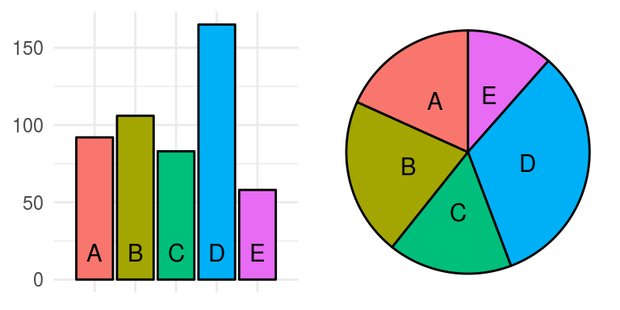
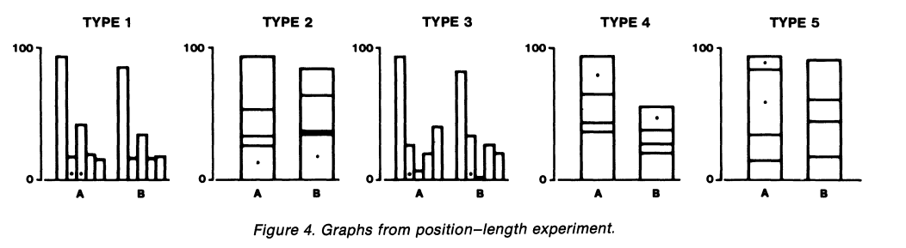
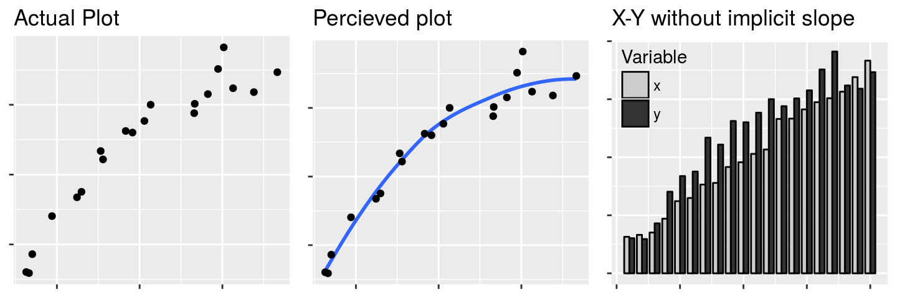
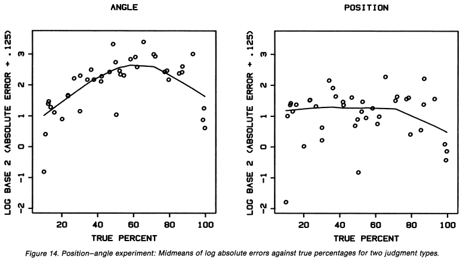
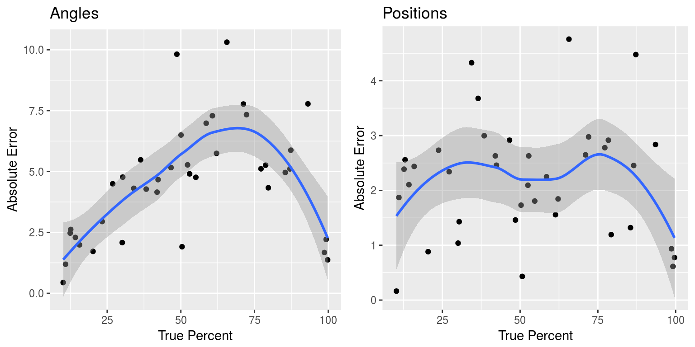

Graphical Perception
Susan VanderPlas
Perception of Graphical Elements
Elementary Perceptual Tasks

“a viewer performs one or more of these mental-visual tasks to extract the values of real variables represented on most graphs”
Not pictured: color hue, texture
Scatterplots

Goal: perceive relative magnitude of the values
Perceptual Task: compare position on a common scale
Bar and Pie Charts

bar: position/length along a common scale, also area
pie: angle (arc length, area)
Bar Charts

| position |
position |
position |
length |
length |
Maps

Curve Differences

Curve Differences
Import and Export values: position on a common scale
Trade Imbalance: length/vertical distance
Cleveland and McGill don’t account for perceptual illusions. We aren’t perceiving length, but diagonal width
Cartesian Plots

With the ability to perceive slopes removed, the pattern of the nonlinear relationship is difficult to perceive
Accuracy
| |
|
| 1. Position along a common scale |
(most accurate) |
| 2. Positions along nonaligned scales |
|
| 3. Length, direction, angle |
|
| 4. Area |
|
| 5. Volume, curvature |
|
| 6. Shading, color saturation |
(least accurate) |
| |
|
Experimental Subjects

Accuracy Measure

Positions and Angles - Average Error

Positions and Angles - Average Error
